AbstractMaterial design of alkali activated fly ash-based binders for extrusion-based 3D printing, the rheological responses that are influential in ensuring printability, and the properties of such binders are discussed in this paper. Fly ash is supplementedwith fine limestone, slag, or portland cement to provide adequate microstructural packing required for printability. The alkaline activators help reduce the yield stress and enhance the cohesiveness of the mixtures. Based on the measured shear yield stress at different times and concurrent printing ofa filament, the printability window and yield stress bounds for printability, applicable for the chosen printing parameters, are established. This approach could be used for mixture qualification for extrusion-based printing. The Benbow-Bridgwater model is implemented on extrusion rheology results of pastes to determine the extrusion yield stress and wall slip shear stress, which are useful process-related parameters. It is shown that these parameters can also be related to shear and extensional rheological properties of alkali-activated pastes, thus ensuring a much-needed link between parameters related to material design and the process of extrusion. Mechanical properties and pore structure similar to those of conventionally cast mixtures are achieved.Metrics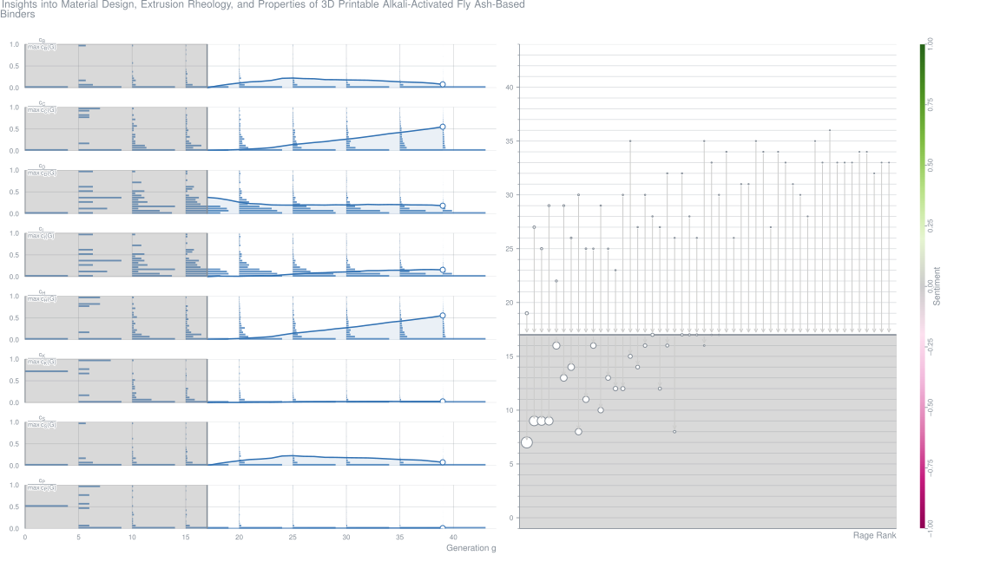
Industrial Adoption of 3D Concrete Printing in the Australian Market (2019-02)
AbstractThree-dimensional (3D) printing is an innovative technological advancement which is quickly overtaking many forms of manufacturing and now seeping into the industry of construction. The basis of this technology allows for digitally designed 3D objects to be autonomously printed via robotic control, removing the need for the majority of human involvement and is, thus, capable of changing the entire construction process as currently known into a cleaner and more sustainable production. Since the construction industry is of high importance for the Australian employment segment and its overall economic position, it is essential that this industry be carefully assessed prior to any major changes. Therefore, since 3D printing is in its initial stages in the construction industry, its potential impact on future stability, national employment, and economic solidity is unknown and, thus, this chapter reviews various literature studies in an attempt to identify all impacts and associated consequences which 3D printing may have on this industry. As a result, a review will be undertaken via the Fishbone Diagram management technique to determine six major influences and all the possible causes and affects this advanced technology could potentially have on the Australian construction industry. Each subsection will be given a yes or no/positive or negative rating allowing for a statistical representation of results to be developed and ultimately will be the basis of the viability evaluation of such an industry changing process.Metrics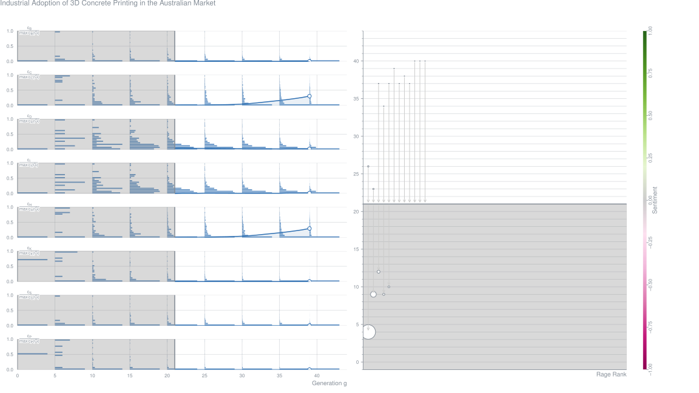
Towards the Formulation of Robust and Sustainable Cementitious Binders for 3D Additive Construction by Extrusion (2019-02)
Dale Bentz,
Scott Jones,
Isaiah Bentz,
Max Peltz Contribution – 3D Concrete Printing Technology
AbstractAdditive construction by extrusion (ACE), also known as construction-scale 3D printing, is a new paradigm for concrete construction. While significant cost and manpower savings are projected, many issues remain to be solved before ACE can be viewed as a mainstream technology. Among these is the formulation of a robust and sustainable binder that meets the demanding rheological and mechanical performance requirements of an ACE application. This chapter investigates the development of such a binder by exploring pastes prepared from binary blends of cement with limestone powder at various proportions, supplemented with the incorporation of a retarder/accelerator admixture combination. Performance is chiefly characterized by applying a Bingham fluid model to characterize the rheological parameters of yield stress and plastic viscosity and by assessing hydration via isothermal calorimetry measurements. Matching the surface area of the limestone powder to that of the cement that it is replacing affords the opportunity to regulate rheology via water content adjustments, while engineering the cement:limestone powder ratio to provide the desired mechanical properties. The utilization of the retarder/accelerator combination produces a paste with a long pot life (stable rheology) that can be quickly stiffened via the injection of the accelerator (and retarded paste) into a static mixer just prior to the printer’s exit nozzle. Thus, these pastes demonstrate the potential to provide a robust and sustainable binder for ACE applications.Metrics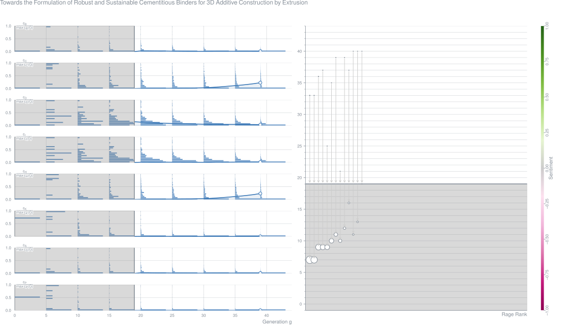
Factors Influencing the Mechanical Properties of Three-Dimensional Printed Products From Magnesium-Potassium-Phosphate Cement Material (2019-02)
AbstractA three-dimensional powder printer was developed and installed, and the specimens were successfully printed at a maximum compression strength of 19.4 MPa at the age of 28 days, with magnesium potassium phosphate cement (MKPC) as the raw material. The printing process makes a sandwich-like structure from a group of MKPC sticks, with an average diameter of 1 mm and printed side-by-side to form a layer and then continuous layers to make a 3D object, by jetting water to the premixed powder of ball-milled magnesium oxide and potassium di-hydrogen phosphate instead of mixing water together with the powder at the same time. Preliminary mechanical test results show obvious distinctive, when the samples loaded in X,Y,Z directions, due to the main mechanical contribution from the MKPC sticks, followed by the bonding of neighbor sticks, and, finally, the layer joint bonding. The joint space of the neighbor sticks and layers have been further studied to analyze the mechanical properties of the final printed result to verify that the layer thickness and the stick/layer combination degree is the key factor to the mechanical properties of the 3D printed result.Metrics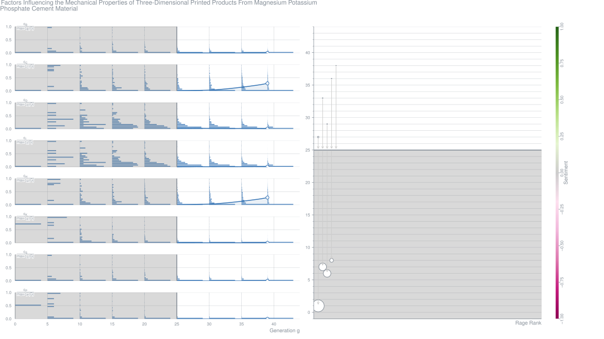
Mechanical Properties of Structures 3D Printed with Cementitious Powders (2019-02)
Peng Feng,
Xinmiao Meng,
Jian-Fei Chen,
Lieping Ye Contribution – 3D Concrete Printing Technology
Abstract3D printing technology has undergone rapid development in the past few years and it is now possible to print engineering structures. This paper presents a study of the mechanical behavior of 3D printed structures using cementitious powder. Microscopic observation reveals that the 3D-printed products have a layered orthotropic microstructure, in which each layer consists of parallel strips. Compression and flexural tests were conducted to determine the mechanical properties and failure characteristics of such materials. The test results confirmed that the 3D-printed structures are laminated with apparent orthotropy. Based on the experimental results, a stress–strain relationship and a failure criterion based on the maximum stress criterion for orthotropic materials are proposed for 3D-printed structures. Finally, a finite element analysis was conducted for a 3D-printed shell structure, which shows that the printing direction has a significant influence on the load-bearing capacity of the structure.Metrics
Building Applications Using Lost Formworks Obtained Through Large-Scale Additive Manufacturing of Ultra-High-Performance Concrete (2019-02)
Nadja Gaudillière-Jami,
Romain Duballet,
Charles Bouyssou,
Alban Mallet,
Philippe Roux,
Mahriz Zakeri,
Justin Dirrenberger Contribution – 3D Concrete Printing Technology
AbstractIn this chapter a new additive manufacturing (AM) processing route is introduced for ultra-high-performance concrete. Interdisciplinary work involving materials science, computation, robotics, architecture, and design resulted in the development of an innovative way of 3D cementitious material printing. The 3D printing process involved is based on a fused deposition modeling-like technique, in the sense that a material is deposited layer by layer through an extrusion printhead mounted on a six-axis robotic arm. The mechanical properties of 3D-printed materials are then assessed. The proposed technology succeeds in solving many of the problems that can be found in the literature. Most notably, this process allows the production of 3D large-scale complex geometries without the use of temporary supports, as opposed to 2.5D examples found in the literature for 3D concrete printing. Architectural cases of application are used as examples in order to demonstrate the potentialities of this innovative technology. Two structural elements were produced and constitute some of the largest 3D-printed concrete parts available until now. Multifunctionality was enabled for both structural elements by taking advantage of the complex geometry which can be achieved using our technology for large-scale AM.Metrics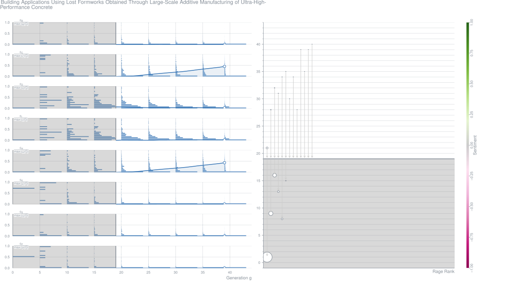
Properties of 3D-Printed Fiber-Reinforced Portland Cement-Paste (2019-02)
AbstractRegular Portland cement-based construction materials exhibit a high compressive strength (around 2060 MPa for general usage) [1], but they fall short in terms of tensile and flexural strength values (310 MPa) for plain cement pastes [2,3]. As a common solution, steel-reinforcement is placed in the formworks in order to improve flexural strength of the cementitious composite. However, steel-reinforcement results in timeand material-consuming labor costs during the construction process since the steel has to be placed and fixed by hand in the construction molds. To avoid the disadvantages of steel-reinforcement, mortars and concretes containing high-performance synthetic fibers (e.g., glass or carbon fibers) were introduced in the 1960s in the scientific literature [4]. The resulting composite materials show a remarkable increase in flexural and tensile properties leading to an ultimate flexural strength of up to 50 MPa, one order of magnitude higher than the corresponding value for plain concrete (without further reinforcement) [57]. Since the late 1990s, efforts have been made on extruding fiber-reinforced cement pastes in a simple extrusion process in order to increase the density of the cement paste and to influence, to a certain extent, the orientation of fibers in the cementitious matrix [811]. A manual nozzle-injection process realizes an extraordinarily high degree of fiber orientation in reinforced cement pastes. If the mean length of the reinforcing fibers is greater than the nozzle diameter, orientation of the fibers parallel to the path of movement through the nozzle takes place. With three vol.% fiber content, a flexural strength of 120 MPa can be realized as reported recently [12]. Since extrusion techniques forcing fiber alignment are capable of producing high-performance fiber-reinforced cementitious composites, the next technological step should head toward a fully automated layer-based fabrication, known as additive manufacturing (AM) or 3D printing, and has already been introduced into the manufacturing of cement-based materials [1315]. Similar developments towards 3D-printing can also be observed in related material classes, for example, biomedical materials [16,17], polymer composites [18,19], or bone replacement materials [2024]. 3D printing is a technique first introduced in the late 1980s and is gaining more and more importance in production processes during recent years [25] since it enables the fabrication of complex, multiscale structures through computer-aided design (CAD) [26,27]. Continuous extrusion or fused deposition modeling (FDM) is based on extruding a (semi-)liquid paste, typically a molten thermoplastic polymer, and depositing the material by a computer-controlled extrusion system [28]. In this chapter we apply FDM 3D-printing on cementitious materials by storing the ready- mixed paste in a reservoir and extruding the material by a movable piston system of a dispenser in order to form layered structures. However, the need for steel reinforcement hampers the fully automated processing of free-formed 3D construction structures made from Portland cement-based materials. As a possible solution, common steel-reinforced concrete might be substituted by a 3D-printable short carbon fiber-reinforced cement exhibiting high flexural strength, thus minimizing the content of reinforcement steel in load-bearing structures. In the next section we describe the required materials development in conjunction with a suitable 3D printing approach, which point in this direction.Metrics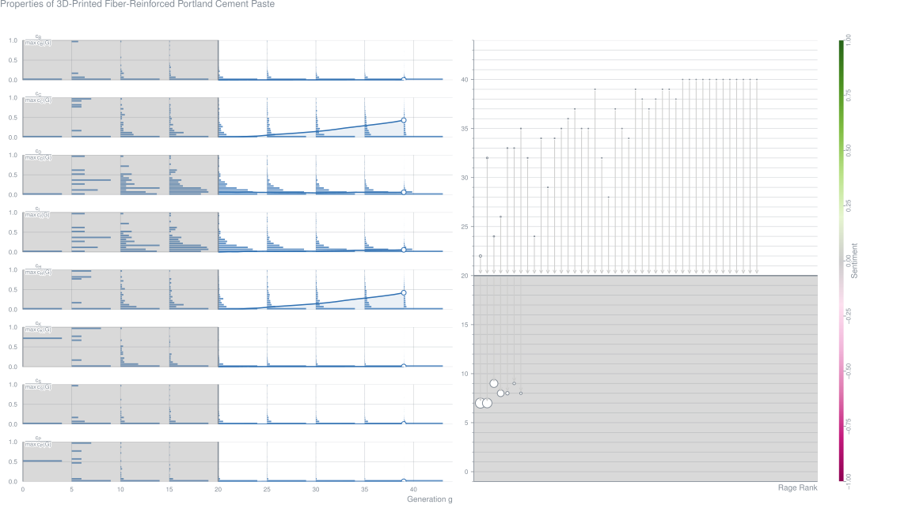
Construction 3D Printing (2019-02)
Camille Holt,
Laurie Edwards,
Louise Keyte,
Farzad Moghaddam,
Belinda Townsend Contribution – 3D Concrete Printing Technology
AbstractAdditive manufacture or 3D printing is revolutionizing manufacturing—from titanium aircraft parts to chocolate. 3D printing allows individually customized products to be produced without any of the tool and set-up costs usually associated with manufacturing. The process of designing a 3D model and then fabricating it layer-by-layer also allows complex shapes with optimized structural properties to be produced. There is no doubt that 3D concrete printing will continue to grow as the technology matures and becomes one of the key manufacturing technologies of the 21st century. Despite the clear benefits, the application of 3D printing in construction, and particularly concrete, has been relatively slow. This chapter examines some of the key technologies in additive manufacture, their benefits and drawbacks, and explores how they can be applied in concrete construction.Metrics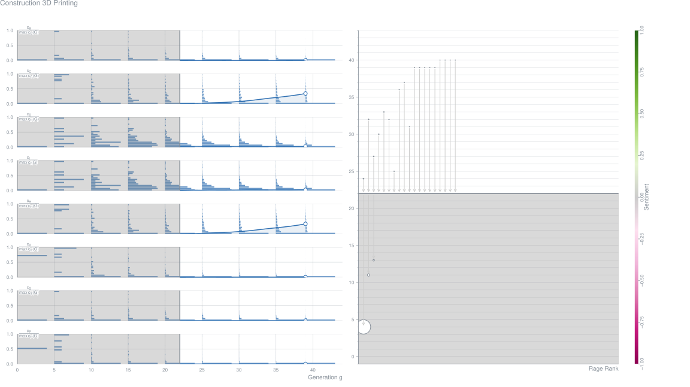
Material-Characteristics of Binder-Jet 3D Printed Hydrated CSA Cement with the Addition of Fine Aggregates (2019-02)
Joseph Ingaglio,
John Fox,
Clay Naito,
Paolo Bocchini Journal Article – Construction and Building Materials, Vol. 206, pp. 494-503
AbstractRecent advances in additive manufacturing technologies for cementitious construction have mainly focused on low resolution fused deposition methods, herein the authors aim to advance high resolution binder jet printing methods. The inherent challenge of additive binder jet cement-based printing is to achieve adequate mechanical strengths and maintain geometry without the agitation and casting of conventional fabrication. The authors utilize a commercially available binder jet printer to fabricate sample specimens that are used to assess material and geometric properties. A novel water-based binder formulation, compatible with concrete chemistry and piezoelectric jetting, is developed. This study examines a dry cementitious mix comprised of round grain fine aggregates and calcium sulfoaluminate (CSA) cement. The printed samples have a density of 1474–1501 kg/m3, 28-day compressive strengths of 5.94–6.70 MPa, and flexural strengths of 1.76–2.39 MPa. The results indicate that binder jet printed CSA cement with the addition of fine aggregates possess the strength and the resolution to produce high detail objects with rapid production capability and compatibility in applications with conventional construction materials.Metrics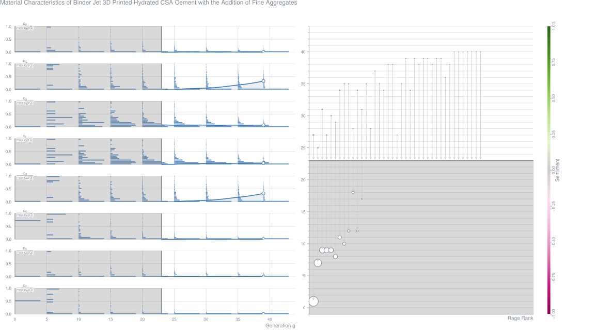
Rheological Property Criteria for Buildable 3D Printing Concrete (2019-02)
Hoseong Jeong,
Sun-Jin Han,
Seung-Ho Choi,
Yoon Lee,
Seong Yi,
Kang Kim Journal Article – Materials, Vol. 12, No. 4
AbstractFresh concrete used in 3D printing should ensure adequate yield stress, otherwise the printed concrete layer may suffer intolerable deformation or collapse during the printing process. In response to this issue, an analytical study was carried out to derive the initial yield stress and hardening coefficient of fresh concrete suitable for 3D printing. The maximum shear stress distribution of fresh concrete was calculated using a stress transformation equation derived from the equilibrium condition of forces. In addition, the elapsed time experienced by fresh concrete during the printing processes was estimated and was then substituted into the elapsed time-yield stress function to calculate the yield stress distribution. Based on these results, an algorithm capable of deriving both the initial yield stress and the hardening coefficient required for printing fresh concrete up to the target height was proposed and computational fluid dynamics (CFD) analyses were performed to verify the accuracy of the proposed model.Metrics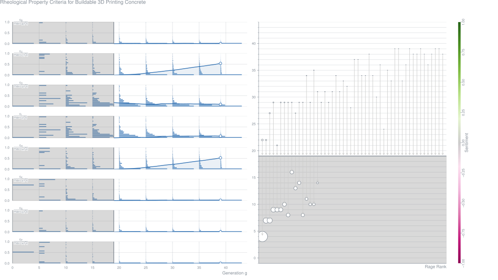
Thermal-Humidity Parameters of 3D Printed Wall (2019-02)
AbstractThe purpose of the external walls is to secure the internal microclimate of the building. External walls not only must have proper strength and durability but also prevent heat escape, overheating during summer, protect from noise and increase of humidity. The main parameter that describes the thermal properties of external walls is the heat transmission coefficient U [W/(m2·K)] determined in accordance with EN ISO 6946:2008. One of most recent technology of constructing walls is the additive manufacturing. The aim of the study is to determine the thermal properties of wall printed with use of High Performance Concrete and insulated with mineral wool. The study determines the temperature and vapour pressure inside the wall and presents calculations of thermal factor. The study compares the characteristics of traditional walls with 3D printed elements. The tests have shown that insulating printed structures does not pose any difficulty. Corrugated structure of printed walls increases the adhesion of adhesive mortar. Proposed tests are the starting point for further studies on the thermal-humidity of 3D printed structures. The main goal is to propose a solution for cheap, efficient insulation technology for 3D printed structures.Metrics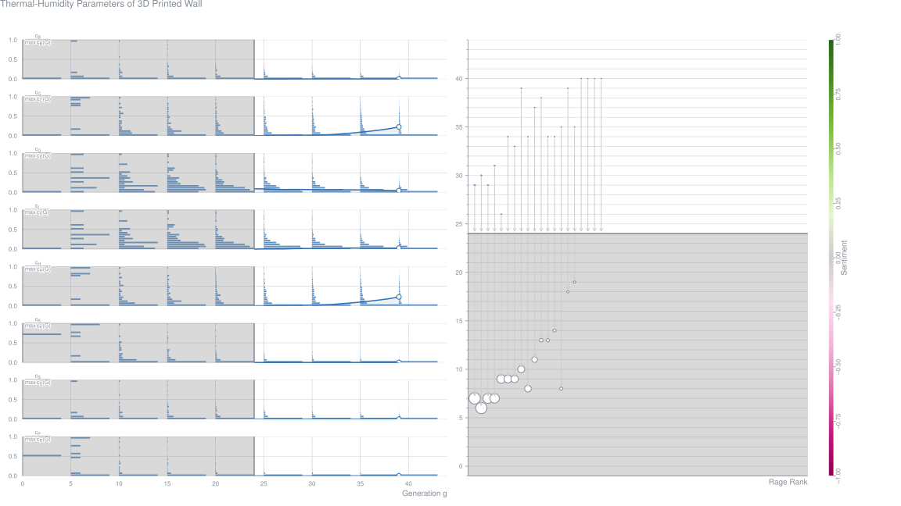
Wood-Based Support Material for Extrusion-Based Digital Construction (2019-02)
AbstractExtrusion-based digital construction (DC) approaches make it feasible to overcome constraints of conventional construction, namely, high formwork costs, long total construction times, low productivity and geometrical inflexibility. However, to date, no satisfactory solutions for extruding strongly inclined and horizontal elements are available. A wood-starch-composite has been systematically developed as a sustainable support material (SM) for extrusion-based DC. Material and process-specific requirements were identified for this purpose, and a feasible process chain was developed. A parametric study was conducted to determine the influence of SM composition on its extrusion feasibility and compressive strength. Various compositions with two starch types and two wood particle shapes were tested. New, specific testing methods were developed. Selected compositions were tested using a 3D-printing device to verify extrudability and form stability. Relationships between material compositions of SM and its rheological and mechanical properties were identified. All mixtures showed sufficient compressive strength in respect of the loading conditions analysed. However, their flow properties varied significantly. A mixture of native maize starch and wood floor was identified as the best variant (compressive strength 2.3 MPa). Comprehensive investigations of possible process chains, as well as full-scale demonstration and optimisation of the process parameters, were not in the scope of this paper. Such investigations are intended in further studies. Practical implications – The general applicability of wood-based SM for DC with cement-based construction materials was proved. The findings offer a novel and promising solution for 3D-printing of non-vertical concrete elements. Experimental setup and material compositions are detailed to ensure reproducibility.Metrics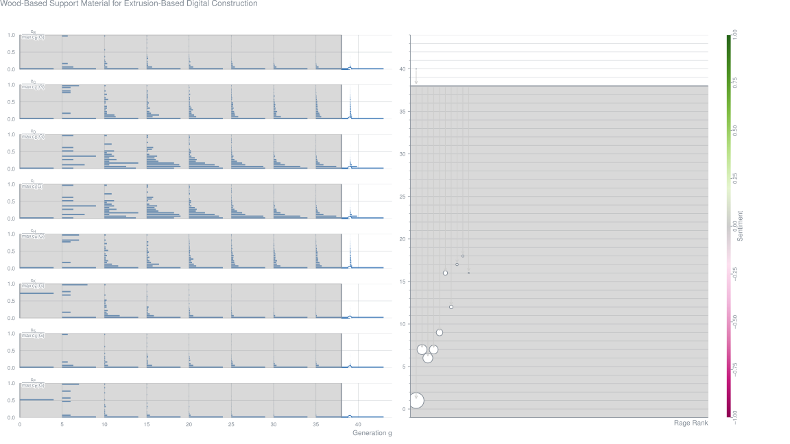
Performance-Based Testing of Portland Cement Concrete for Construction-Scale 3D Printing (2019-02)
AbstractIn this chapter, a framework for performance-based laboratory testing of Portland cement-based mixtures for construction-scale 3D printing is presented. In this framework, a “printing mixture” in fresh state is characterized in terms of print quality, shape stability, and printability window. Print quality is described using measures of surface quality and dimensions of printed layers. Details of two proposed test methods for evaluation of shape stability, namely layer settlement and cylinder stability, are also provided. By experimental studies of four different mixtures it is shown that inclusion of silica fume and nanoclay significantly enhances shape stability. The results of some conventional tests, as well as several proposed new test methods, are used to evaluate the performance of printing mixtures.Metrics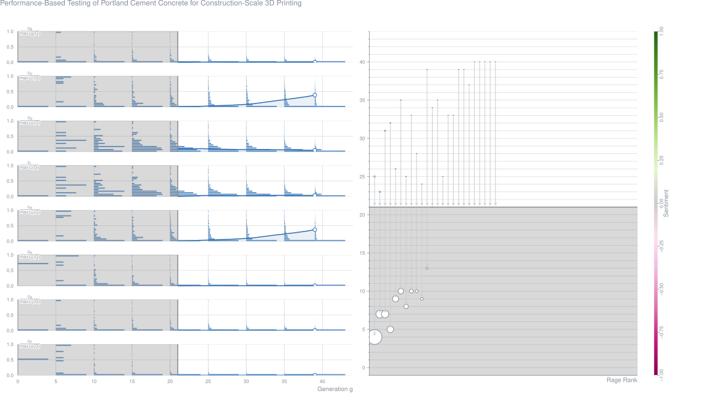
Method for the Enhancement of Buildability and Bending-Resistance of Three-Dimensional-Printable Tailing Mortar (2019-02)
AbstractIn recent few years, significant progress has been made in developing various 3D printing techniques to accommodate the need for constructionscale 3D printing. Many attempts have been conducted to explore the potential of 3D printing in the building and construction industries, such as D-shape, contour crafting, and concrete printing [16]. Such techniques are well-suited to the production of one-off, complex structures that would often be difficult to produce using traditional manufacturing methods. Cementitious materials that are compatible with 3D printing promote rapid application of this innovative technique in the construction field with the added advantages of low cost, high efficiency, design flexibility, and being environmentally friendly [610]. It is critical to ensure a complementary connection between the designs of the printable mix and printing machine. Currently, various 3D-printable mixtures have been continuously developed, such as high-performance composites [11,12] and fiber-reinforced mixtures [13], among others. A number of specific implementation practices have been presented, for example, a five-story apartment 3D printed by WinSun [14], the Big Delta project [15], a castle printed in situ [16], and architectural elements [17], etc. All of these projects demonstrated the great potential and feasibility of 3D printing in constructing large-scale building components.Metrics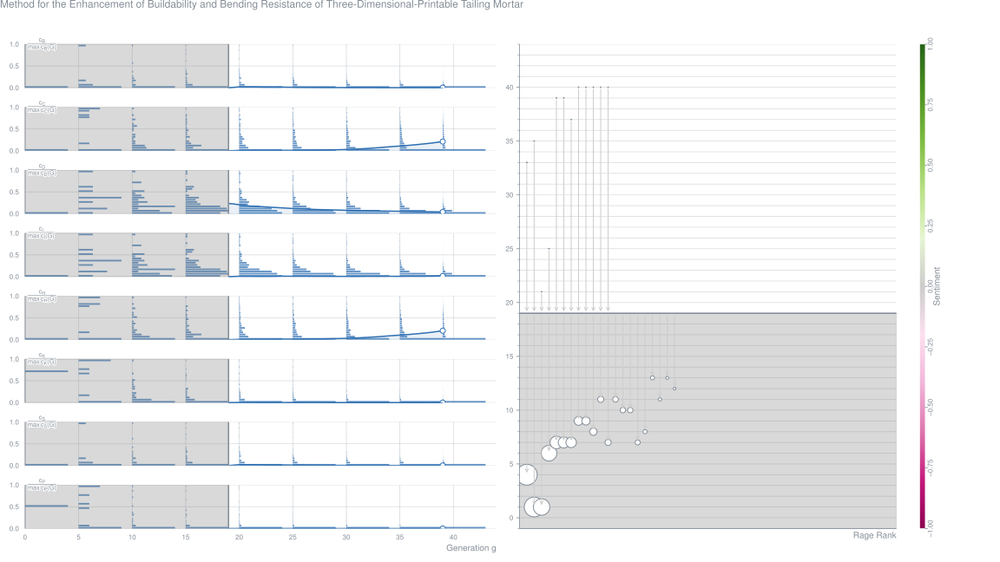
A Systematical Review of 3D Printable Cementitious Materials (2019-02)
Abstract3D printing, or additive manufacturing, is a technology which adopts layer-by-layer additive deposition process to build three-dimensional objects. Over the past decade, 3D printing has been attractingmore andmore attention in the building and construction industry. Compared with conventional concrete casting techniques, 3D printing contributes to higher efficiency with freeform construction, greatly reduced labor and much less construction waste. However, 3D printable cementitious materials are different from conventional concrete in terms of rheology, printability, and mechanical performances. This paper aims to systematically bridge the gap between the requirement and research and development of 3D printable cementitious materials to date. Guided by 3D printing process and multi-level design of cementitious materials, the requirements for 3D printable cementitious material at different material development levels are discussed. This paper provides insights for the future development of 3D printable cementitious materials for building and construction by controlling the basic inputs of materials to obtain desired structural performance.Metrics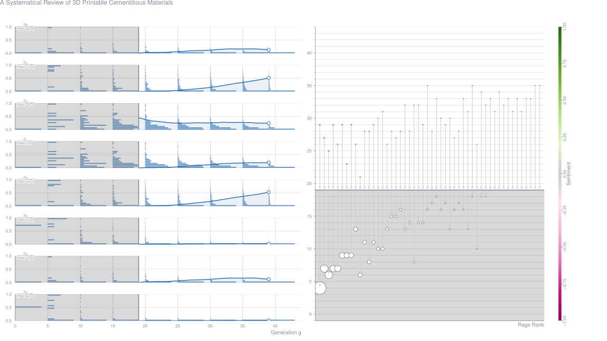
3D Concrete Printing: Machine Design, Mix Proportioning, and Mix Comparison Between Different Machine Setups (2019-02)
Zeina Malaeb,
Fatima El Sakka,
Farook Hamzeh Contribution – 3D Concrete Printing Technology
Abstract3D concrete printing is an innovative construction method that was recently introduced to the construction industry and has proven to be beneficial in terms of optimizing construction time, cost, design flexibility, and error reduction as well as being environmentally friendly. It involves fabricating a predesigned building element in 2D layers on top of each other, the repetition of which results in a 3D model. The concrete, which is poured out of a printing nozzle, does not require any formwork or subsequent vibration [1]. The technology of 3D printing started in the 1980s [2], but was only introduced to the construction industry in the mid-1990s by researchers at the University of Southern California [3]. The research team has produced extensive material on the topic including developing several machines for research on fabrication using various types of materials. These machines include an XYZ gantry system, a nozzle assembly with three motion control components, and a six-axis coordinated motion control system [4]. The developments in the field remained almost steady until about 2012 [3] when several other parties began investigating different approaches and technologies related to 3D printing. The University of Loughborough has presented a pioneering work in concrete printing [3]. Moreover, the Chinese company, WinSun, displayed its expertise in 3D printing by printing 10 houses within 24 hours, with each house costing a mere $5000 [5]. WinSun then took it to a higher level and printed a five-story building which is currently the highest 3D-printed structure [6].Metrics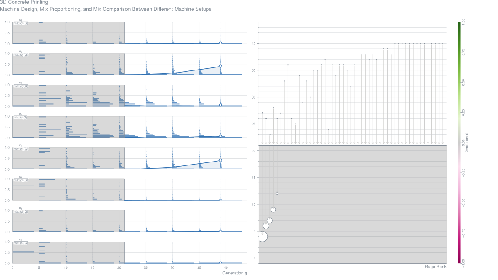
Inter-Layer Strength of 3D Printed Concrete (2019-02)
AbstractAdditive manufacturing (AM), commonly known as three-dimensional (3D) printing is a group of emerging techniques for fabricating 3D structures directly from a digital model in successive layers. The American Society for Testing and Materials (ASTM) defines AM as “the process of joining materials to make objects from 3D model data, usually layer upon layer” [1]. AM technologies were initially developed in the 1980s and have already been successfully applied in a wide range of industries including aerospace and automotive manufacturing, biomedical, consumer, and food [2]. Currently, AM techniques have become an integral part of modern product development. 3D printing technology is gaining popularity in construction industry. Unlike the conventional approach of casting concrete into a formwork, 3D concrete printing (3DCP) combines digital technology and innovative insight from materials technology to allow freeform construction without the use of expensive formwork. Freeform construction would enhance architectural expression, where the cost of producing a structural component will be independent of the shape, providing much-needed freedom from rectilinear designs [3]. When compared to conventional construction processes, the application of 3D printing techniques in the construction industry may offer excellent advantages, including: (1) reduction of construction costs by eliminating expensive formwork [3,4]; (2) reduction of injury rates by eliminating dangerous jobs (e.g., working at heights), which would result in an increased level of safety in construction [3]; (3)
Fiber-Reinforced Cementitious Composite Design with Controlled Distribution and Orientation of Fibers Using Three-Dimensional Printing Technology (2019-02)
AbstractComposites represent widely utilized materials with desirable properties developed for specific purposes. One of the most commonly used artificial composites in the field of civil engineering is fiber-reinforced cementitious composites (FRCCs), which consist of the randomly distributed short fibers inside cementitious matrix. There are various factors that affect the behavior of the FRCCs, such as the interfacial behavior between fiber and matrix as well as the behavior of the matrix and fiber itself. The distribution and orientation of fibers in the composite is one of the more important factors that affect the mechanical properties of FRCCs. However, those parameters can be changed during composite fabrication and controlling the spatial parameters of fibers in the produced material represents a significant challenge. In this chapter, the applicability of the 3D printing technique for controlling fiber distributions and orientations is evaluated. The methodology of making fiber structures are discussed. The fibers were fabricated by using the 3D printing technique and were placed inside a mold to produce cementitious composites. With the fabricated cementitious composite, three-point bending tests were conducted to evaluate the dependence of their mechanical properties on the fiber distributions. As a result, the feasibility of utilizing 3D printed fibers for the fabrication of composite materials with controlled reinforcement distributions and orientations can be established.Metrics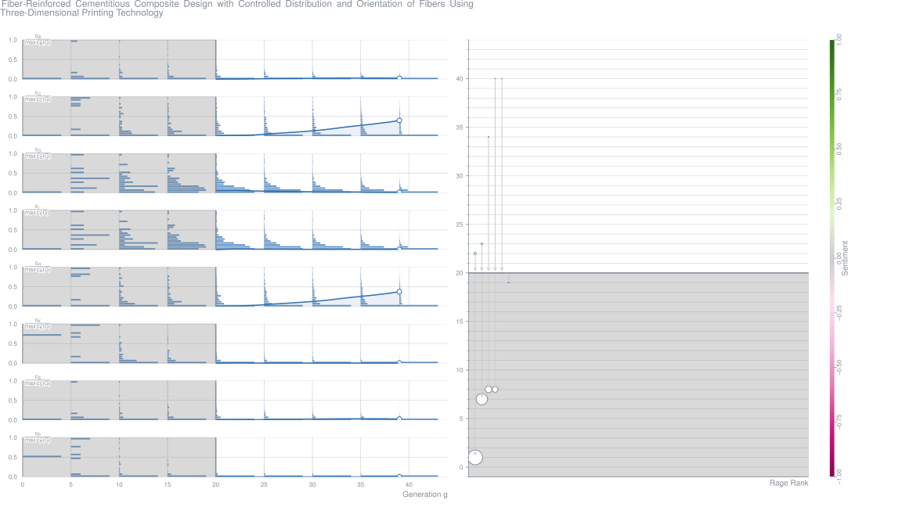
Properties of Extrusion-Based 3D Printable Geopolymers for Digital Construction Applications (2019-02)
AbstractAdditive manufacturing (AM), commonly known as three-dimensional (3D) printing is rapidly transforming manufacturing, aerospace, and medical industries. It has “the potential to revolutionize the way we make almost everything” as said by the former US President, Barack Obama in his state of the union address. If the 3D printing can be used with concrete, it can potentially change the way we build concrete structures, saving huge costs in formworks and allow freeform construction. Freeform construction would enhance architectural expression, where the cost of producing a structural component will be independent of the shape, providing the much-needed freedom from the rectilinear design [1,2]. In the past few years, several emerging 3D concrete printing (3DCP) technologies have been explored in the construction industry. These 3DCP technologies are principally based on two techniques, namely: (1) powder-based; and (2) extrusion-based techniques. The powder-based 3DCP technique is an offsite process, which has the potential to make building components with complex geometries such as panels, permanent formworks and interior structures which can be later assembled onsite [1,2].There is a demand in the construction industry for such components. Based on the available construction systems, the use of expensive formworks are essential to build such components. The powder-based 3DCP technique can satisfy this industrial demand as it is capable ofmaking robust and durable building components at a reasonable speed without the use of expensive formworks. However, the commercially available powder-based 3D printers usually use proprietary printing materials, which are not suitable for the construction applications. To tackle this limitation, the authors of this study developed an innovative methodology to adopt geopolymer materials in commercially available powder-based 3D printers for construction applications [2-9].Metrics
Effects of Layer-Interface Properties on Mechanical Performance of Concrete Elements Produced by Extrusion-Based 3D Printing (2019-02)
AbstractInterfaces between layers in 3D-printed elements produced by extrusion-based material deposition were investigated on both macro- and micro-scales. On the macro-scale, compression and flexural tests were performed on two 3D-printable cement-based compositions (3PCs), namely Mixtures C1 (with Portland cement as sole binder) and C2 (containing pozzolanic additives) at testing ages of 1 day and 28 days. The influences of binder composition and time interval between layers on layer-interface strength were critically analyzed. The investigated time intervals were 2 min, 10 min and 1 day. The investigations revealed that Mixture C2 exhibited lower degrees of anisotropy and heterogeneity as well as superior mechanical performance in comparison to Mixture 1. In particular, Mixture C2 showed a less pronounced (below 25%) decrease in interface bond strength as observed in flexural tests for all time intervals under investigation. In contrast, the decrease in flexural strength measured for C1 specimens amounted to over 90% due to the higher porosity at the interfaces of the printed concrete layers. Microscopic observations supported the findings of the macroscopic investigations. SEM images also delivered additional information on morphology of interfacial defects as well as ‘‘self-healing”.Metrics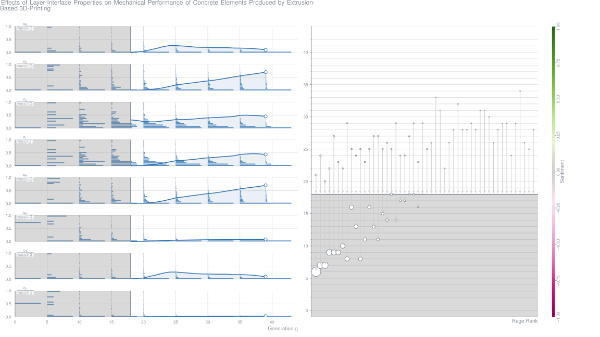
Studying the Printability of Fresh Concrete for Formwork-Free Concrete Onsite 3D Printing Technology (CONPrint3D) (2019-02)
AbstractConcrete is the world’s most widely used construction material; with a major part of it being ready-mix concrete. For placing most types of concrete, especially those of ready-mix concrete, formworks are needed. The use of formworks often leads to high material, labor, and machinery costs in addition to considerable time delays and a negative impact on the environment. Other important challenges faced by the construction industry are low productivity, scarcity of labor, limited geometrical freedom, slow speed of construction, construction in hazardous or remote areas, high cost, and low sustainability. Although modern automation and computeraided manufacturing have revolutionized many industrial processes, they still have had a very limited influence on the construction industry. Researchers across the globe are striving to solve these limitations by bringing muchneeded mechanization and automation into the construction sector with innovative digital construction (DC) technologies [13]. DC technologies open up a plethora of opportunities and technological advancements, such as no need of formwork (considerable time and cost reductions), high geometrical flexibility, and low dependency on skilled labor. However, the main significance and revolutionary potential of 3D concrete printing is seen in the context ofConstruction Industry 4.0 since it offers a logical and highly desired step from the already well-developed tool of digital design and planning (computer aided design (CAD), building information model (BIM), etc.) to the digital manufacturing, thus, making construction a fully digitalized, seamless process.Metrics
Synthesis and Characterization of One-Part Geopolymers for Extrusion-Based 3D Concrete Printing (2019-02)
AbstractInterest in innovative construction processes such as 3D concrete printing (i.e. digital construction), is growing rapidly both in academia and industry. Processing conventional geopolymer mixes, in which alkaline solutions are used for activation, could be troublesome in concrete printing due to the high viscosity of the alkaline solution. One-part geopolymers offer one possible solution to this challenge as they involve the use of a solid activator with solid aluminosilicates precursors. In this work, a printable one-part geopolymer mix was developed, which could be extruded through the nozzle of a 3D printer and stacked together without deforming the bottom layers. Flow properties such as yield stress, viscosity and thixotropy of the developed geopolymer were assessed along with its strength development curve. Printed specimen showed anisotropic behaviour in mechanical properties when compared to the mould casted samples. Microstructural characterization revealed the formation of alumino-silicate gel with high tetrahedrally coordinated Al and interlayer K ions in its structure. When compared to OPC-based mixes, the developed geopolymer mixes revealed a lower environmental impact, which could be even further reduced with the use of alternative activators.Metrics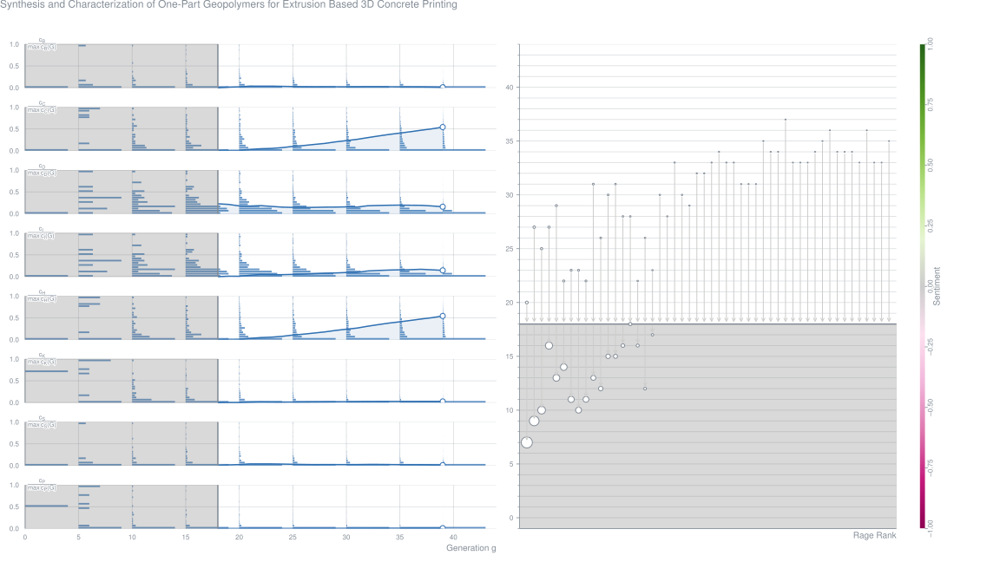
Mechanical Properties and Deformation Behavior of Early-Age Concrete in the Context of Digital Construction (2019-02)
AbstractDigital construction is gradually opening unlimited possibilities for building and concrete industry. The key secret for a robust print process lies in our understanding of the processing technology and material fresh properties, in addition to developing novel measurement and control techniques. This paper aims to gain a better understanding of early age mechanical properties of 3D printable materials and improve it for the requirement of large scale concrete printing. Experimental investigations were carried out to measure green strength and stiffness of fresh fly ash-cement mortar with applied 3D optical metrology. The compressive green strength was linked with material yield strength evolution and later, modified with nanoclay for higher buildability properties. Nanoclay addition deceased the layer deformation due to significant increase in Young's modulus and to estimate this uncontrolled deformation, a mathematical function was formulated, which subsequently validated by comparison to printing experiments.Metrics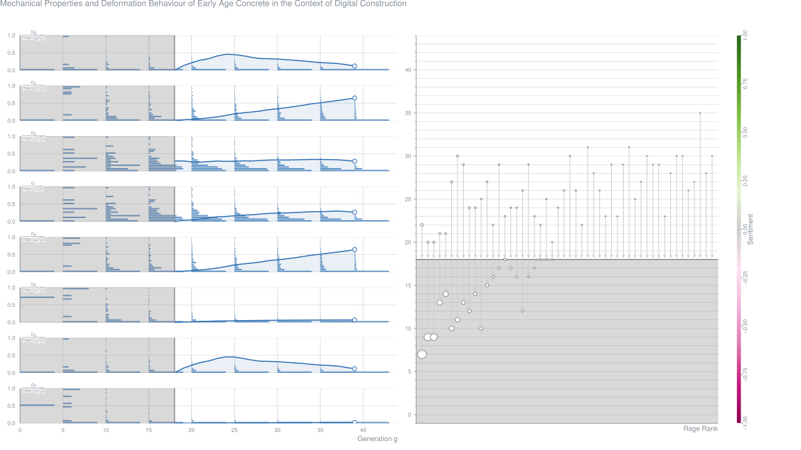
Extrusion of Cement-Based Materials: An Overview (2019-02)
AbstractExtrusion is a process which consists in forcing a formable material to pass through a die having the cross‐section of the part to be obtained. This way of processing is used with both conventional and fibre‐reinforced cement‐based materials to fabricate various construction elements such as panels, pipes, and roadside kerbs. Recently, with the development of digital fabrication methods and, especially, 3D concrete printing by selective deposition, extrusion techniques have aroused a significant increase in interest. This study describes screw and ram extrusion techniques and their applications in the construction industry. Furthermore, the underlying mechanisms which are part of extrusion flow are delineated, and the roles of rheological and hydro‐mechanical behaviour, the latter in a context of soil mechanics, in defining the extrudability of the cementitious materials are highlighted. Finally, specific points such as flow‐induced anisotropy of fibre‐reinforced cementitious materials or surface defects are addressed.Metrics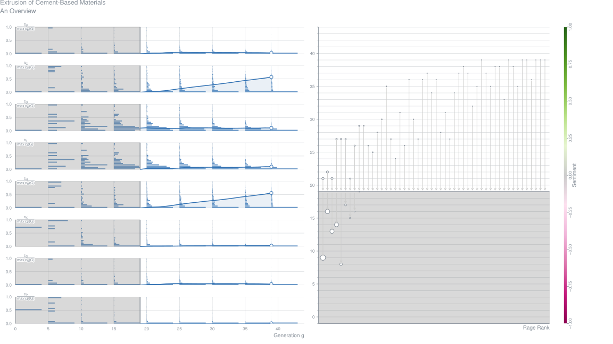
Investigation of Concrete Mixtures for Additive Construction (2019-02)
Todd Rushing,
Peter Stynoski,
Lynette Barna,
Ghassan Al Chaar,
Jedadiah Burroughs,
Jameson Shannon,
Megan Kreiger,
Michael Case Contribution – 3D Concrete Printing Technology
AbstractThe US Army Engineer Research and Development Center conducted a three-year, applied research program entitled Automated Construction of Expeditionary Structures to develop an adaptable capability to “print” custom-designed expeditionary structures on demand in the field using locally available materials with the minimum number of personnel. This work investigated large-scale, automated “additive construction” (i.e., 3D printing with concrete) for construction applications. The primary focus of this chapter is the phased development and demonstration of a printable concrete mixture using conventional materials and natural aggregates, including 9.5 mm coarse aggregate. A qualitative screening test was proposed in which concrete mixtures were forced through a modified clay extruder and evaluated on performance and potential to be suitable for nozzle extrusion in 3D printing with concrete. Standard methods were used to evaluate fresh and hardened properties of concrete mixtures including flow, time of setting, compressive and flexural strengths, and shrinkage, among others. Conventional concrete mixtures, typically with a high percentage of coarse aggregate, were found to be unsuitable for additive construction applications; however, reducing the amount of coarse aggregate provided concrete mixtures that were promising for additive construction while still utilizing materials that are generally available worldwide. The principle outcome of the program was successful printing of a structurally sound, 48 m2, full-scale building. Although this chapter only provides details on the materials study, the program consisted of many significant task groups, including concrete printer design and fabrication, development of system, construction, and performance requirements, energy and modeling, materials and testing, and architectural and structural analysis. A brief summary of the overall outcomes is presented here, while details of the total program are documented elsewhere.Metrics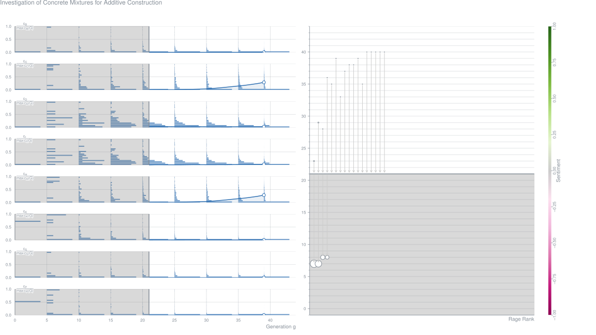
3D Concrete Printing for Construction Applications (2019-02)
Abstract3D concrete printing in construction applications is an innovative and challenging area of research which combines the knowledge of traditional construction with digital fabrication. The elimination of formwork plus several other major benefits may trigger the industry to focus on this area in the near future. There has been increased attention on academic research and industrial applications in this area. This chapter briefly introduces the methods touted currently as well as the background of free-form construction.Metrics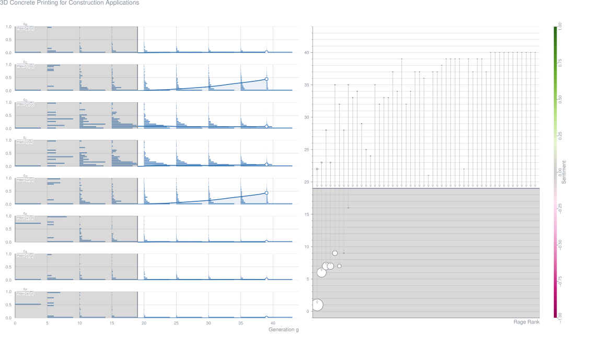
Design 3D Printing Cementitious Materials via Fuller-Thompson-Theory and Marson-Percy-Model (2019-02)
AbstractCementitious materials for 3D printing have special requirements for rheological properties, which are significantly affected by many factors, including sand gradation and packing fraction. Fuller Thompson theory and Marson-Percy model are classic approaches for sand gradation and packing fraction optimization, respectively. This paper attempts to apply Fuller Thompson theory and Marson-Percy model in designing cementitious materials for 3D cementitious materials printing (3DCMP). Various gradation methods adopted in this study were Fuller Thompson gradation (mixture A), uniform-gradations (mixture B and C), gap-gradations (mixture D and E). Besides these mixtures with special gradation approaches, one mixture using natural river sand (mixture F) was prepared as well. Rheological properties were characterized by static/dynamic yield stress and plastic viscosity in Bingham plastic model. Buildability was examined by printing a column with 10 cm inner diameter via a gantry printer. Rheological test results indicate that mixture A designed by continuous gradation possesses the highest static/dynamic yield stress and lowest plastic viscosity. During printing test for buildability, mixture A can easily reach up to 40 layers without notable deformation, while all other mixtures deformed noticeably and fell down before the 35th layer. Finally, a large-scale printing was carried out with mixture A and a structure with the height of 80 cm was printed successfully without notable deformation. Density, compressive strength and flexural strength of printed filaments were also characterized. Mechanical performance test results illustrate mixture A has the highest density and appropriate compressive strength, and a relatively high flexural strength at different curing ages. These results indicate that Fuller Thompson theory and Marson-Percy model can serve as a reasonable guide for material rheology design for 3DCMP.Metrics
Development of Powder-Based 3D Concrete Printing Using Geopolymers (2019-02)
AbstractAdditive Manufacturing (AM), also known as three-dimensional (3D) printing, is a manufacturing process where a complex 3D object created by computer aided design (CAD) software is built using a layer-by-layer deposition approach through a series of cross-sectional slices [1,2]. Although AM has been extensively adopted in many industries such as automotive, aerospace, medicine, and biological systems [1,3], the construction industry has been rather slow in implementing AM. In recent years, AM has gained a considerable amount of attention from the construction industry due to its remarkable advantages over the conventional approach of casting concrete into a formwork, including enhanced geometrical freedom, increased level of safety and reduction in construction cost, waste, and time [4,5]. In the past few years, a variety of AM technologies have been developed for 3D concrete printing (3DCP) applications. These technologies can be classified into two forms, extrusion-based and powder-based techniques.Metrics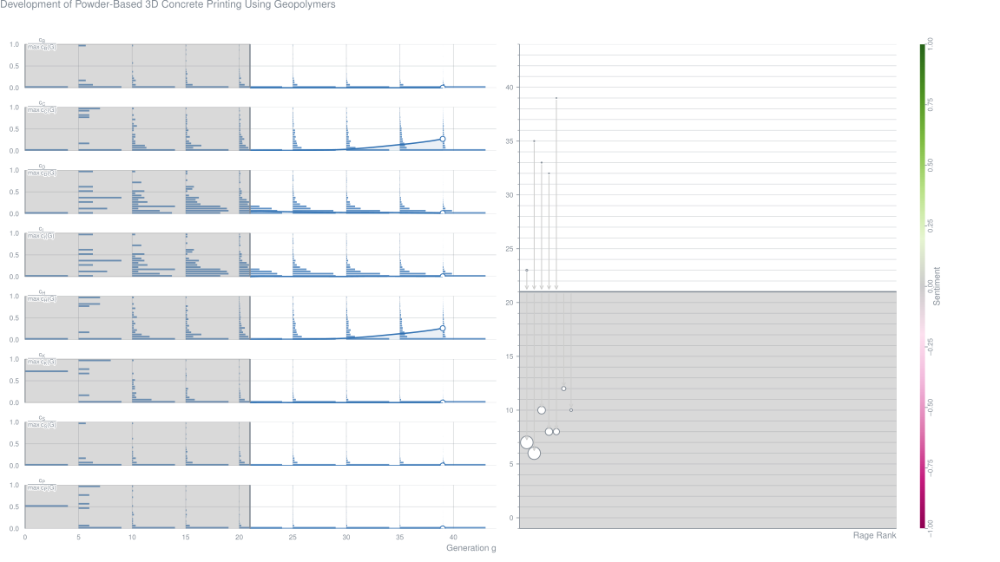
Properties of Powder-Based 3D Printed Geopolymers (2019-02)
AbstractAdditive manufacturing, commonly known as three-dimensional (3D) printing is a group of emerging techniques for fabricating 3D structures directly from a digital model in a layer-wise form with less waste material. The current construction processes are labor intensive combined with a high rate of injuries [1], thus, making automation of construction processes a necessity. Development of new construction techniques such as 3D concrete printing (3DCP) opens many thresholds into the future of construction industry. Unlike the conventional approach of casting concrete into a formwork, 3DCP techniques will combine digital technology and new insights from materials technology to allow freeform construction without the use of expensive formwork. Freeform construc- tion would enhance architectural expression, where the cost of producing a structural component will be independent of the shape, providing the much-needed freedom from the rectilinear designs [1]. In the past few years, different 3DCP techniques have been explored and adopted in the construction industry [25]. One of the techniques is the extrusion-based technique, similar to the fused deposition modeling method, which extrudes cementitious material from a nozzle mounted on a gantry, crane or a 6-axes robotic arm to print a structure layer by layer. This technique has been aimed at onsite construction applications such as large-scale building components with complex geometries. The weak interlayer strength between printed layers is one of the limitations of this technology when compared with cast-in-the-mold concrete.Metrics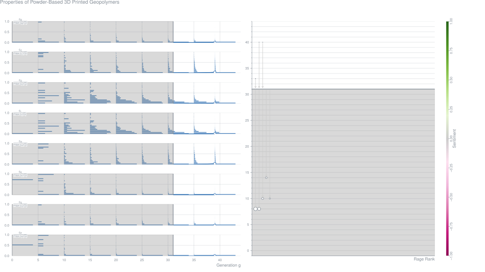